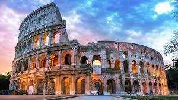
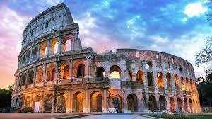
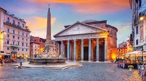
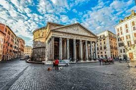
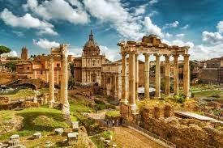
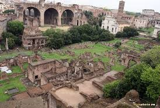
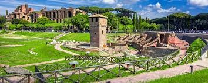
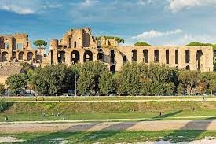

Colosseum:
Simbolul Romei, amplasat in Centro Storico, una dintre cele mai impresionante cladiri ale Imperiului Roman, cea mai mare constructie a vremurilor sale si astazi, cel mai mare amfiteatru antic din Italia.
Este un edificiu impresionant atat pe zi cat si pe noapte. Noaptea, luminile arhitecturale ii contureaza maretia iar linistea din jurul lui iti da ocazia sa il admiri in toata splendoarea, imaginea de ansamblu fiind intregita de Arco di Constantino. Mi-a placut in mod special cum se intrevede in capatul strazii Via dei Fori Imperiali. Ziua, se pot observa detaliile mult mai bine insa multimea de oameni din jur si atmosfera incarcata contrasteaza puternic cu cea traita noaptea.
Adresa: Piazza del Colosseo. La Collosseum se ajunge cu metroul pe linia albastra (B), statia Collosseo.
 

Panteonul:
In momentul in care pasesti in interiorul ei ti se taie respiratia. Imensitatea ce ti se deschide in fata ochilor este de nedescris si nu ai cum sa nu ramai mut de uimire in fata maiestriei arhitecturale, a inaltimii impresionate a cupolei cu fereastra rotunda care comunica cu cerul. Firul de lumina patrunde prin oculus, creand imagini de vis chiar si pentru cei mai pretentiosi fotografi. Aceasta deschidere, denumita oculus, nu a fost niciodata acoperita, iar ploaia care patrunde inauntru se scurge prin podeaua perfect gandita.
Această clădire reprezintă și locul de veci pentru regii italieni Vittorio Emanuele al II-lea și Umberto I, precum și celebrul pictor renascentist, Raphael.
Pantheonul a fost ridicat la cererea lui Marcus Agrippa, om politic si general, apropiat al Imparatului Augustus, ca templu pentru toti zeii din Roma Antica si reconstruit de Imparatul Hadrian in 126 d.Hr. Ulterior, in anul 608 d.Hr a fost transformat in Biserica de catre Imparatul Phocas care i l-a oferit Papei Boniface al IV-lea.
Cea mai bine conservata constructie romana si cea mai importanta cladire veche cu acoperisul original intact, Pantheonul este una dintre cele mai spectaculoase cladiri din punct de vedere arhitectural. Constructia este perfect rotunda in interior, chiar daca la exterior pare dreptunghiulara, are Inaltimea si diametrul interiorului identice, masurand 43,2 m.
Adresa: Panthonul se gaseste in Piazza Rotonda. Ca sa ajungi aici cu metroul trebuie sa mergi pe linia rosie (A) si sa te dai jos la statia Barberini.


Forul Roman:
Situat intre Dealul Palatin si Dealul Capitolului, forul era centrul vietii publice romane locul unde se desfasurau activitati de comert, afaceri, religie si justitie. Accesul se face din diferite puncte insa daca alegeti sa intrati din Via dei Fiori Imperiale, veti patrunde pe Via Sacra, cel mai vechi drum care strabate Forul Roman si leaga Dealul Palatin de dealul Capitolului.
Aici se pot vizita: Cele 3 arcuri de triumf construite de Augustus, Titus si Septimius Severus, Curia (locul unde se reunea Senatul), Rostra (locul de unde se tineau discursurile), Temple: Saturn, Vespasian, Castor si Polux, Antoniu si Faustina, Vesta, Fecioarelor Vestale, Divus Romulus, Venus, Divus Julius, Concord, Basilica lui Maxentius (Constantin), Basilica Julia, Basilica Aemilia.
Adresa: Via della Salara Vecchia. Se ajunge cu metroul pe linia albastra (B), statia Collosseo.


Circus Maximus:
Ai putea sa treci pe langa el fara sa iti dai seama ce ratezi, urmele celei mai vechi arene romane nefiind atat de pronuntate. Nu a mai ramas decat o mica parte din tribune insa amprenta locului este evidenta si sentimentele celui care stie sa priveasca si sa isi imagineze, de nedescris.
Circus Maximus a fost primul stadion roman destinat curselor cu cai, pentru amuzamentul privitorilor. Arena avea o capacitate de aproximativ 250.000 de oameni, iar dimensiunile acesteia erau 621 m în lungime și 118 m în lățime.
Adresa: Via del Circo Massimo.


Castelul Sant Angelo:
Castelul Ingerilor domneste mandru pe malul Tibrului, a lui imagine impunatoare se poate observa cel mai bine de pe Podul Pons Aelius, denumit si Pont Sant Angelo. Castelul a fost construit initial ca mausoleu pentru Imparatul Hadrian sub conducerea arhitectului Demetrianus iar ulterior a fost modificat in castel, resedinta papala si mai apoi muzeu. Un coridor secret leaga castelul de Vatican, coridor care a fost folosit de apa Clement al VII-lea si de Garda Elvetiana, pentru a se retrage din calea armatei lui Charles de Bourbon in timpul invaziei orasului Roma din 1527.
Mausoleul lui Hadrian a gazduit mormintele imparatului si ale succesorilor sai pana la Caracalla.
Adresa: Lungotevere Castello, 50


Terme di Caracalla:
Peste Baile Caracalla am dat din greseala, cand eram in cautarea Arenei Circo Massimo, dupa multi km facuti pe jos in ziua respectiva. La vederea cladirilor, inca impresionante ne-am apropiat si mare mi-a fost mirarea sa descopar un centru SPA din perioada Imperiului Roman.
Cel mai mare complex de bai din perioada respectiva, Terme di Caracalla au fost inaugurate in anul 217 AD, in vremea imparatului Caracalla. Baile aveau o capacitate de 1500 de vizitatori si primeau zilnic aproximativ 6000-8000 persoane.
Termele lui Caracalla au fost mai mult decat bai publice, acesta era un centru de divertisment si recreere in adevaratul sens al cuvantului, cumva similar cu centrele SPA din zilele noastre…chiar mai complex. Pe antrenamentele fizice din salile de antrenamente, inotul in piscine incalzite de soare, sedinte de terapie termala si masaje, vizitatorii se puteau plimba prin gradinile din incinta, puteau lectura in biblioteci si admira galerii de arta.
Adresa: Viale delle Terme di Caracalla. Se ajunge cu metroul, pe linia B, statia CIrco Massimo.


Fontana di Trevi:
Cea mai cunoscuta si probabil cea mai vizitata fantana din Roma si nu numai. Este cu adevarat specaculoasa…o auzi de la cateva strazi distanta, sunet amplificat de forfota de oameni din jurul ei. Parca niciun alt obiectiv istoric stradal din Roma nu este atat de aglomerat ca Fontana Di Trevi, aici efectiv in sezon nu ai cum sa prinzi o fotografie fara oameni, decat in miez de noapte.
Fantana a fost construita la ordinul papei Clement al XII de catre Nicola Salvi pornind de la un proiect initial realizat de Bernini. Constructia ei a durat 30 ani (1732-1762).
Fantana ilustreaza marea schimbatoare prin Neptun, zeul marii care se afla intr-un car de lupta sub forma de scoica, tras de doi caluti de mare, unul naravas si altul calm.
Se zice ca cine arunca peste umar o moneda in fantana, o sa mai revina la Roma. De data asta nu am aruncat moneda…dar totusi sper sa mai revin aici, cel putin de 10 ori.
Adresa: Piazza di Trevi


Piazza Navona:
Piazza Navona este pur si simplu incantatoare! Piata situata central, in vecinatatea Pantheonului, a fost construita pe locul fostului stadion a lui Domitian.
Astazi este o placere sa iti petreci serile aici, alaturi de sutele de oameni care se relaxeaza la una din terasele de aici sau pur si simplu pe bancile amplasate langa minunatele fantani din centrul pietei. Daca tot am mentionat fantanile, cea mai renumita este Fontana dei Quattro Fiumi, realizata de Bernini in secolul al XVIII-lea, care ilustreaza cele 4 fluvii: Dunarea, Nilul, Gange si Rio de la Plata.


Piazza Campidoglio:
Locul care adaposteste lupoaica cu Romulus si Remus. Originalul se gaseste in muzeul din Palazzao dei Conservatori insa exista si o copie expusa in aer liber. Este putin dificil sa o gasesti pe noapte dar si pe zi…micuta este cocotata pe un piedestal amplasat intr-unul din colturile pietei.
Dealul Capitoului este cel mai mic din cele 7 coline pe care a fost construita Roma, prin pozita sa strategica fiind fortareata naturala a orasului dar si centru religios.
Piazza del Campidoglio dar si cladirile de jur imprejurul ei au fost proiectate de renumitul Michelangelo. Aici veti gasi: Palazzo Nuovo, Palazzo dei Conservatori – care formeaza Muzeele Capitoline si Palazzo Senatorio. Poate datorita faptului ca stiam acest lucru, sau poate pentru ca am ajuns prima data pe noapte aici, atmosfera a fost cu totul aparte. Era o liniste de nedescris. Eram noi cu fantana, cu palatele si lupoaica. Pe zi, se pot observa mult mai bine detaliile, iar sculpturile care strajuiesc scarile care coboara in oras sunt cu totul si cu totul deosebite. Noaptea nici nu le-am vazut. Muzeele Capitoline gazduiesc opere realizate de Rubens, Titian Caravagio.
Adresa: Piazza Campidoglio


Biserica Santa Maria della Concezione si Cripta Capucinilor:
Santa Maria della Concezione dei Cappuccini, o biserică construita intre anii 1626-1631 de catre Antonio Casoni. Biserica este renumita pentru macabra cripta care adaposteste scheletele a peste 4000 de calugari capucini, calugari care au trait si au murit in manastirea alaturata bisericii. Peretii tapetati cu schelete sunt infricosatori. Nu este recomandata celor slabi de inger.
Adresa: Via Vittorio Veneto.


Quattro Fontane:
De intersectia celor 2 strazi care gazduieste cele 4 fantani incantatoare pe timp de noapte mi-am adus aminte imediat cum le-a vazut de la distanta. Acum 8 ani cand paseam pentru prima data in Roma, intr-o plimbare de seara cu masina, am dat absolut intamplator peste ele. Nu se regasesc pe nicio harta cu obiectivele turistice si nici prea multe informatii pe internet nu gasesti.
Ele ilustreaza Raul Tibru, Aniene, Zeita Diana si Zeul Juno.
Adresa: intersectia strazilor Via delle Quattro Fontane si Via del Quirinale.


Turnul din Pisa:
Turnul înclinat din Pisa este de fapt doar una dintre numeroasele atracții din orașul Pisa, dar faima sa, obținută din defectul său, este renumită în întreaga lume. Lucrul a început pe turn în anii 1100, iar scufundarea, care a dus la prăbușire, a început de când turnul a ajuns la a treia poveste. Înainte de lucrările de restaurare din anii 1990, era prevăzută să se răstoarne până în anul 2000. Astăzi, vizitatorii pot urca scările turnului pentru o priveliște fabuloasă asupra orașului. Turnul înclinat, cunoscut și sub numele de La Torre Pendente, se află pe Piazza dei Miracoli, un loc pe care îl împărtășește cu frumoasa Catedrala romană din Santa Maria Assunta și cu un baptisteriu rotund, de înaltă calitate.
Fiecare dintre aceste caracteristici remarcabile lucrări de sculptură medievală de piatră.